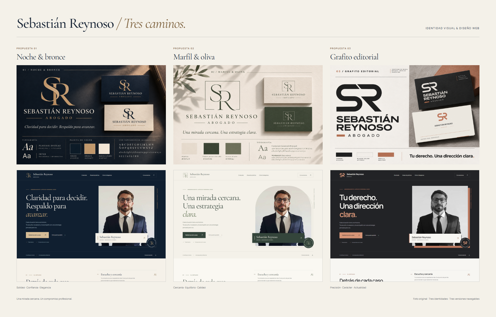
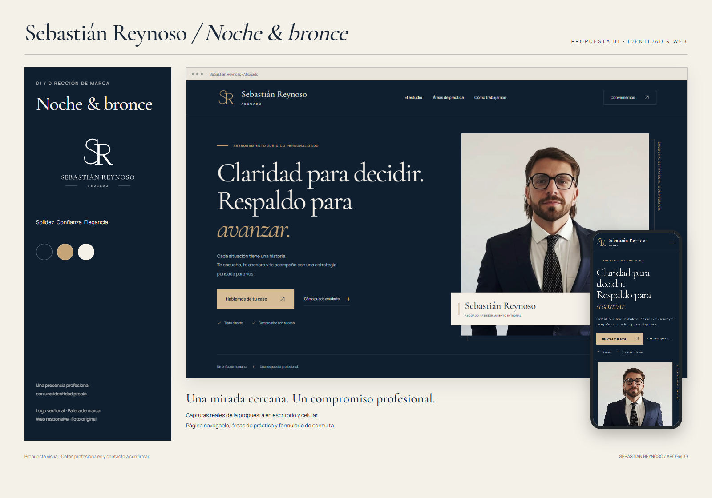
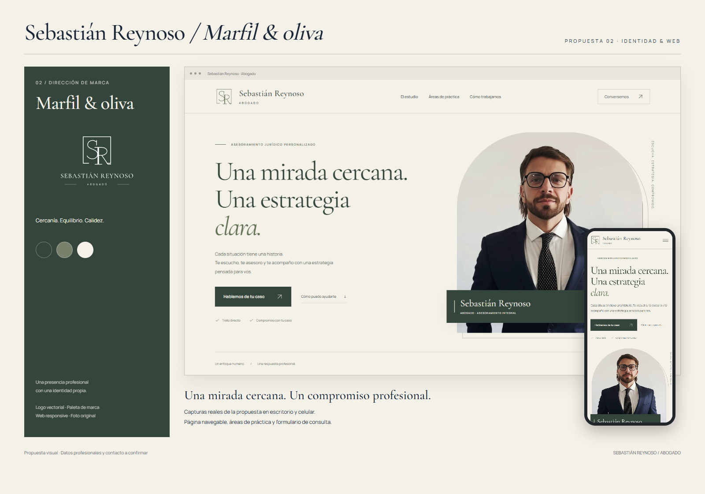
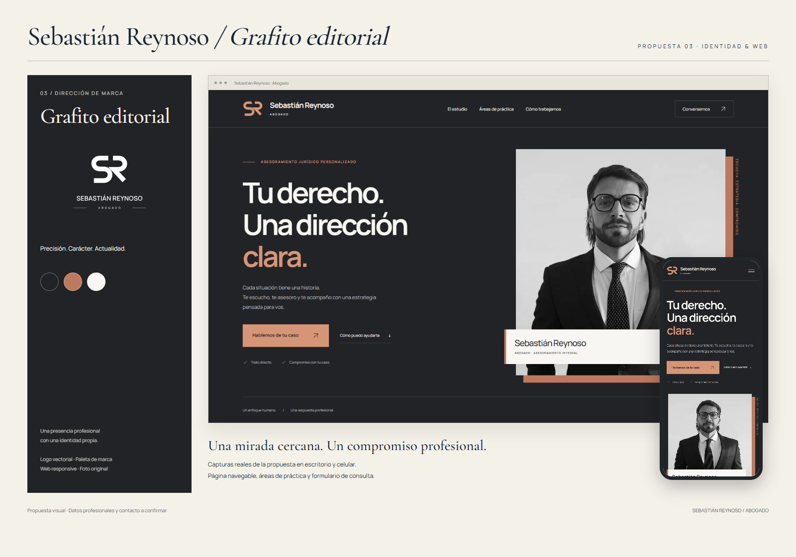

Las tres, de un vistazo.

01 / Noche & bronce

02 / Marfil & oliva

03 / Grafito editorial

Para navegar las páginas: abrí INICIAR.cmd en esta carpeta. Las imágenes y esta presentación no necesitan instalación ni conexión. También tenés todo separado por propuesta en PARA-MOSTRAR.
Los mockups conceptuales y las capturas iniciales pueden mostrar el retrato, textos y grafía del apellido anteriores. El sitio actual y los logos descargables usan Reinoso con i. La página elegida ya tiene las áreas y el contacto proporcionados; el formulario prepara el mensaje en WhatsApp para confirmar allí el envío. Identidades conceptuales con asistencia de IA; los SVG son interpretaciones vectoriales propias para la web.